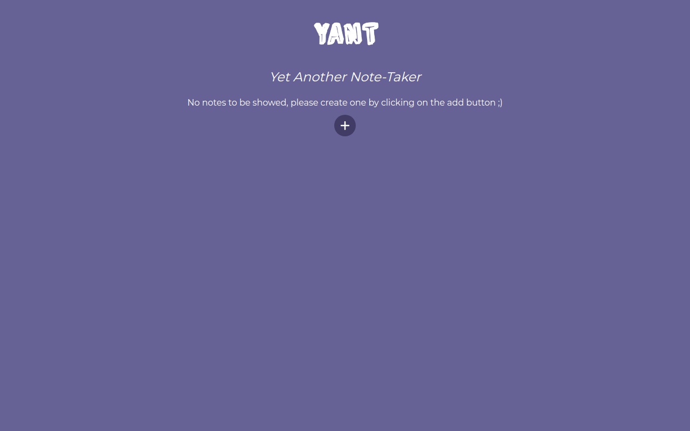
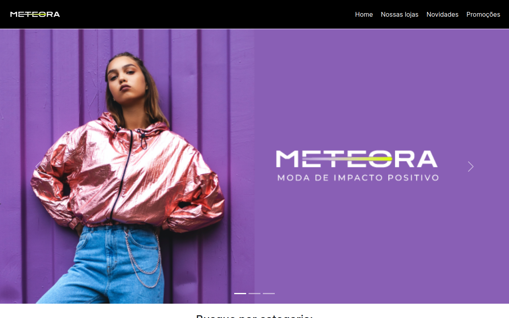

Projetos principais
YANT
 https://yant-nickdca.vercel.app/Yet Another Note-Taker - YANT - é uma aplicação web onde o usuário pode criar e editar notas com diferente prioridades. Uma feature em destaque é o suporte ao formato markdown na criação e edição dessas notas.
Meteora
 https://meteora-sooty.vercel.app/Meteora é uma landing page moderna e responsiva para um e-commerce de roupas desenvolvida em HTML, CSS e JavaScript durante uma das edições do Alura Challenge.